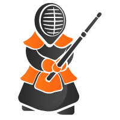
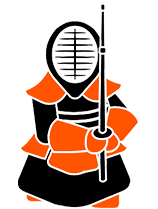
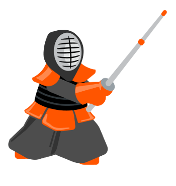
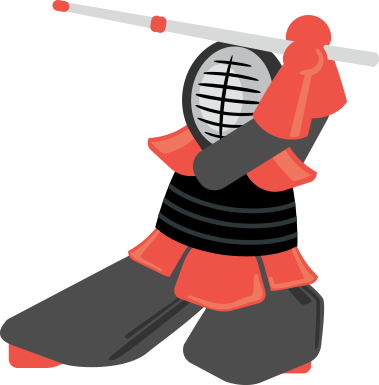
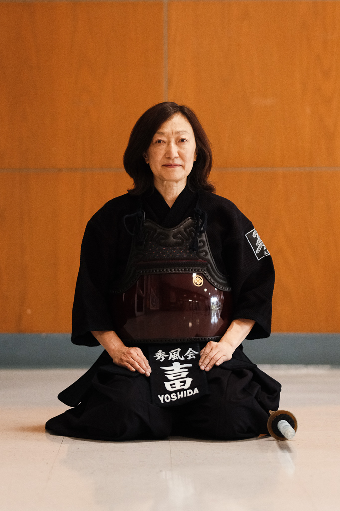
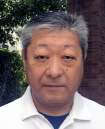
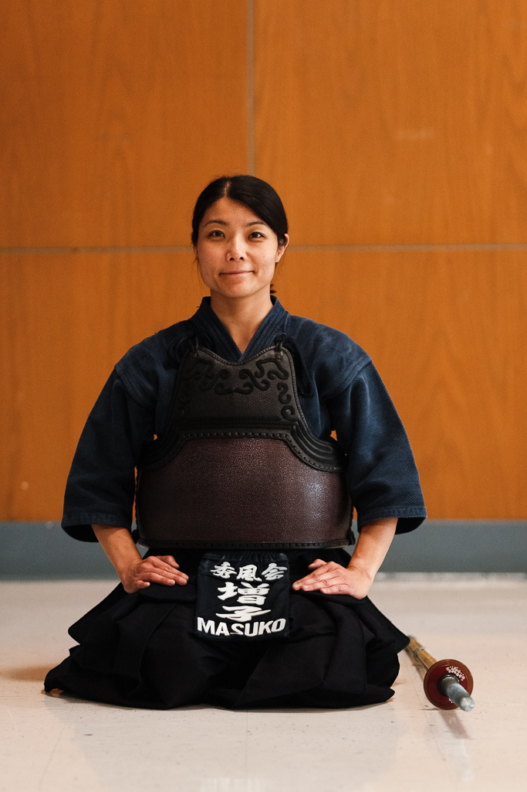
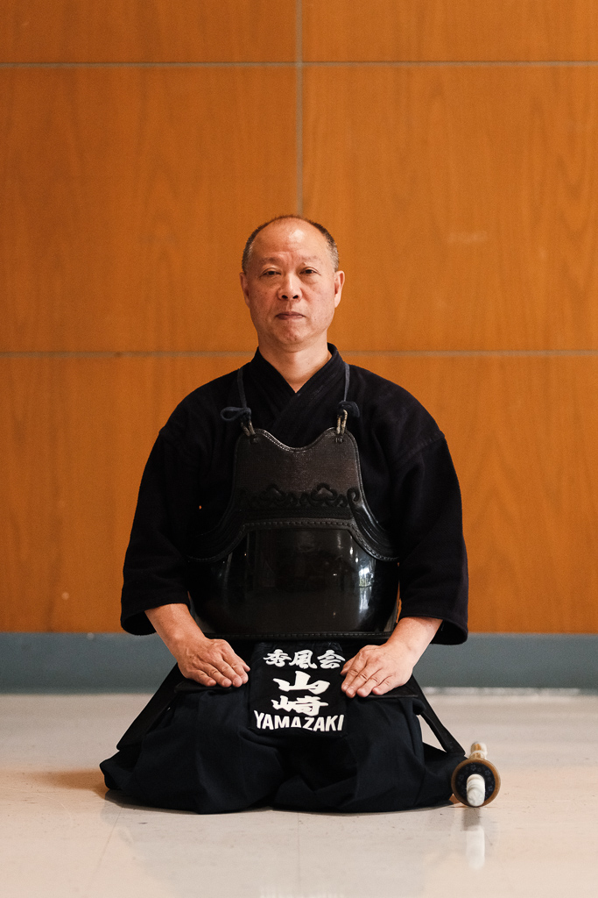
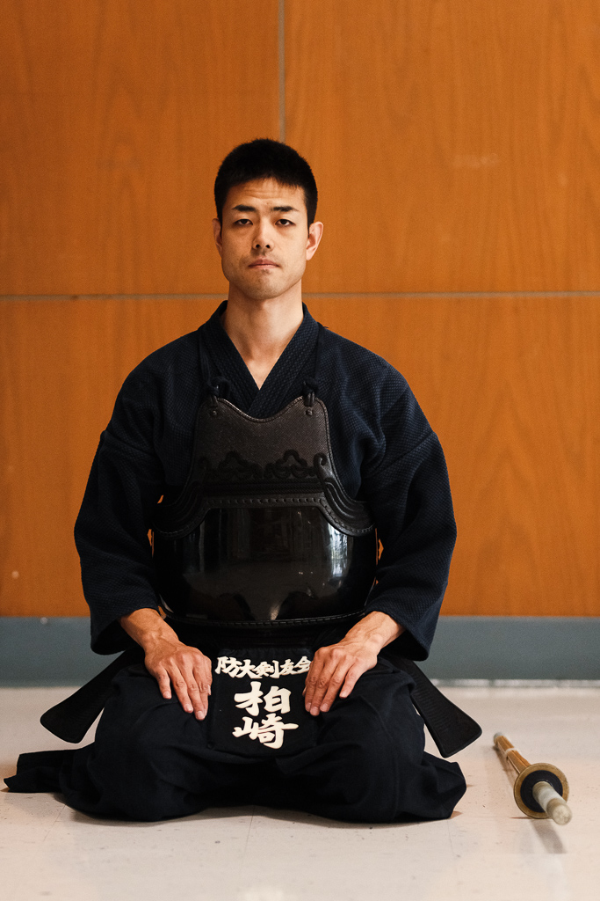
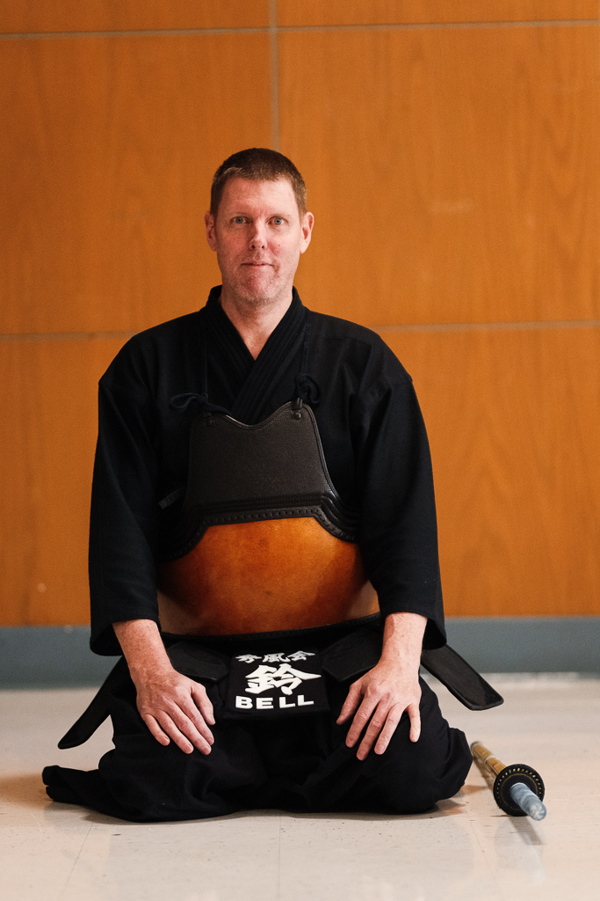

ボストン秀風会剣道
ボストン剣道 秀風会へようこそ。1997年に荻村寿浩と剣道の達人たちによって設立された当道場は、25年以上にわたりボストン地域における剣道稽古の中心的存在として活動してきました。マサチューセッツ州ランドルフ（ボストン近郊）にて毎週日曜日に稽古を行っています。
アメリカ・ボストンで剣道を続けたい駐在員の方、留学生の方、これから剣道を始めたい方、どなたでも歓迎いたします。日本語での対応も可能ですので、お気軽にお問い合わせください。
当道場の名称は、江戸時代に山岡鉄舟によって設立された「春風館」道場に敬意を表しています。私たちのロゴに象徴されるように、武道の習得への献身を表す漢字「秀」を選びました。
全米剣道連盟（AUSKF）および全米東部剣道連盟（AEUSKF）の会員として、最高水準の武道指導を維持しています。
ボストンで武道の稽古を探している方、特に剣道に興味がある方、当道場は全てのレベルの修行者を歓迎します。武道の旅を始めるために、ぜひご連絡ください。
剣道とは？
剣道は「剣の道」として知られ、日本の伝統的な武道で剣術の技を中心としています。日本の最も尊敬される武道の一つとして、剣道は厳しい身体訓練と精神修養を組み合わせ、武道修行の完全なアプローチを提供します。当ボストン道場では、心身ともに鍛える本格的な剣道稽古を提供しています。
秀風会ボストン剣道 - 稽古スケジュールと案内

場所・時間
住所800 N Main St, Randolph, MA 02368
日曜日：午後3時 - 午後5時30分
（全レベル、7歳以上）
水曜日の稽古スケジュールは近日公開予定。

入門時期
新入門者の受付は9月と3月の入門期間に行っています

費用
年間連盟（AUSKF）費：
大人 $30
学生 $20
年間保険料：$25
連盟費と保険料は変更される場合があります

用具
稽古用具は各自でご用意ください。他の剣道家への敬意として用具の管理をお願いします
初心者は稽古開始時に竹刀と動きやすい服装のみ必要です
剣道指導者 - 先生方

吉田敏美
教士七段

杉本貴之
錬士七段
ティム・ラスムソン
錬士六段

増子小夜香
六段

山崎岳人（ブラッド）
六段

柏崎顕士
六段

クレイグ・ベル
五段
よくある質問
ボストンで剣道を習えますか？
はい。秀風会はボストン近郊のマサチューセッツ州ランドルフ（800 N Main St, Randolph, MA 02368）で毎週日曜日の午後3時から5時30分まで稽古を行っています。7歳以上であればどなたでも参加できます。
初心者でも大丈夫ですか？
はい。初心者の方も歓迎しています。稽古を始めるにあたって必要なものは竹刀と動きやすい服装のみです。防具は稽古に慣れてから準備していただきます。
日本からの駐在員や留学生でも参加できますか？
もちろんです。当道場には日本語を話す会員や指導者が在籍しており、日本での段位もそのまま継続していただけます。ボストンへの赴任・留学を機に剣道を続けたい方はぜひご連絡ください。
入門の時期は決まっていますか？
新入門者の受付は主に9月と3月の入門期間に行っています。時期についてはお気軽にお問い合わせください。
費用はどのくらいかかりますか？
年間の全米剣道連盟（AUSKF）費が大人 $30、学生 $20、加えて年間保険料がかかります。詳細は稽古案内をご覧ください。
武道の旅を始めましょう
ボストンで剣道を始める準備はできましたか？次の稽古に参加するには shufukaikendo@gmail.com までご連絡ください。日本語でのお問い合わせも歓迎します。